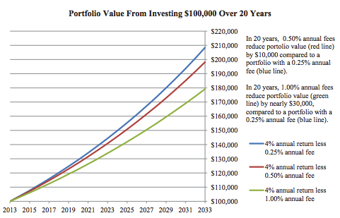

InvestWell's primary goal is to help individuals get a better grip on their finances as well as learn disciplined investing principles. This is based on the long documented, but widely ignored data that the vast majority of "professional investors" fail to reliably and consistently beat the market. According to 15 year study conducted by Standard & Poors, for the period ending December 2016, 92.15% of large-cap, 95.4% of mid-cap, and 93.21% of small-cap managers trailed their respective benchmarks.
What this means in plain english is that the over 90% of mutual fund managers performed worse than the overall stock market,yet continued to collect millions in fees for their 'performance'. These fees can drastically alter the value of your investment portfolio over a long time horizon. As shown in the image below, the difference of a 0.25% annual fee vs. a 1.00% fee amounts to a $30,000 loss in portfolio value over 20 years. Combine this loss in value from fees with the widespread underperformance of the mutual fund industry and you are effectively paying someone to negatively impact your retirement portfolio.

Why then does the mutual fund industry continue to have billions of dollars in assets under management? The simple answer lies in the massive financial illiteracy of the American public. According to a 2016 FINRA study of over 27,000 Americans, 63% of those polled were deemed financially illterate. They were unable to answer simple everyday questions covering aspects of finance and economics.
Finance can be intimidating for those starting out. InvestWell is here to help. Through our comprehensive financial education articles and planning tools we will help you cut through the financial jargon and get a firm grip of your finances. Make a free account and get started today!